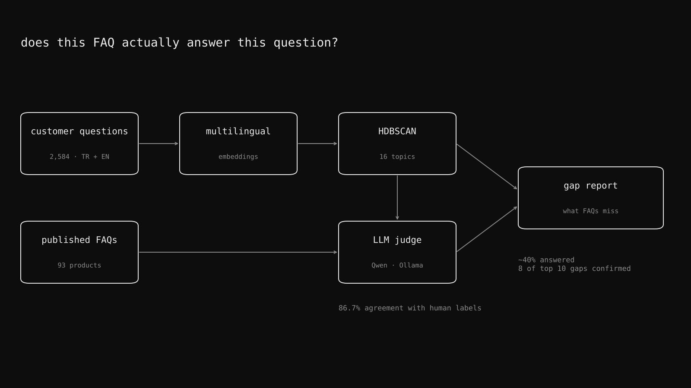

FAQ Gap Analyser
- role
- AI Workflow Engineer Intern
- stack
- Python, Qwen via Ollama, Pydantic, HDBSCAN, scikit-learn, SQLite / SQLAlchemy, pytest, GitHub Actions
internal project · no public code
FOREO publishes FAQs for its products. Customers still ask questions on marketplaces. I'm building a tool that measures how much of what customers actually ask is answered by those FAQs, and where the biggest gaps are.
What I did
- Collected 2,584 real marketplace questions in Turkish and English across 93 products, and matched them against the published FAQs.
- Embedded the questions with a multilingual model and clustered them into 16 topics with HDBSCAN, so gaps show up as themes instead of thousands of single questions.
- Used a local LLM (Qwen through Ollama, with Pydantic-validated output) as a judge: does this FAQ actually answer this question? Its verdicts agreed with my human labels 86.7% of the time on held-out data.
- Result so far: the FAQs answer about 40% of questions. 8 of the 10 biggest gaps the tool flagged held up under manual review.
- Split evaluation into synthetic and real hold-out sets, with a provenance rule that keeps synthetic data out of any number that reaches the business.